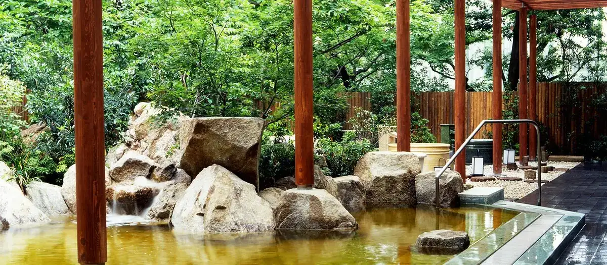
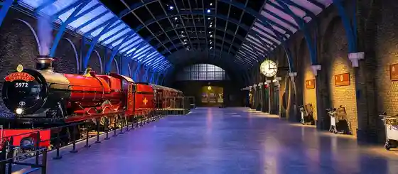
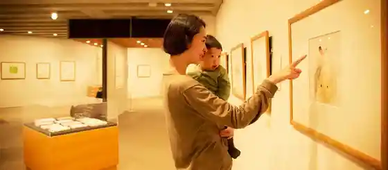
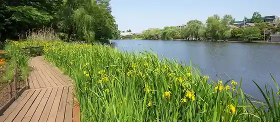

Nerima
Nerima · Tokyo
Nerima
Highlighted on the Tokyo map.

Sights
Bade to Tennen Onsen Toyoshima Sono Niwa Baths
Wana Burazasu Sutajio Tour Tokyo – Meikingu Obu Harii Potta

Chihiro Art Museum Tokyo

Rikujo Jieitai Koho Center Rikkun Land
Shakujii Park

Nerima Tateishi Kami I Koen Furusato Bunka Kan
Oizumi Chuo Park
Kamen Raida 1 Go (Kamen Raida) Dezainmanhoru
Nerima Ritsu Makino Kinen Garden
Musashiseki Park Fujimi Ike
Tagara Umebayashi Park
Nerima Ritsu Art Museum
Toei Animeshon Museum
Oizumi Animegeto